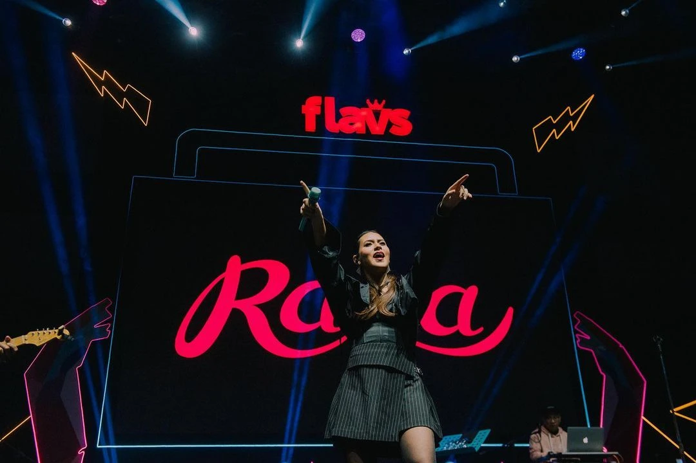
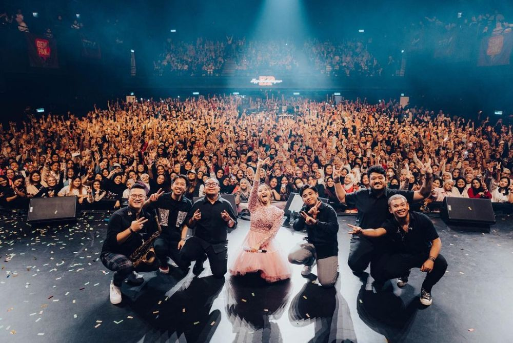
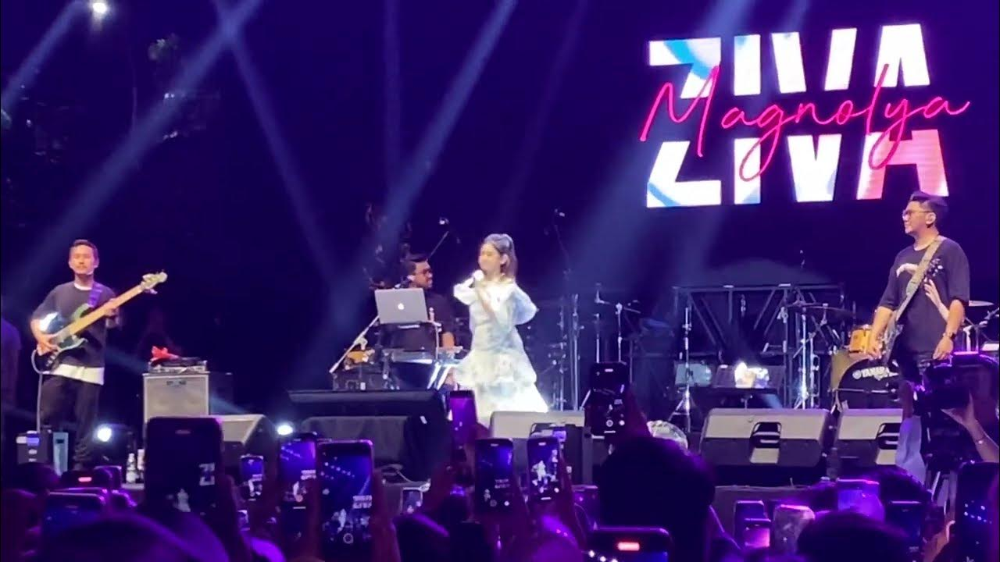
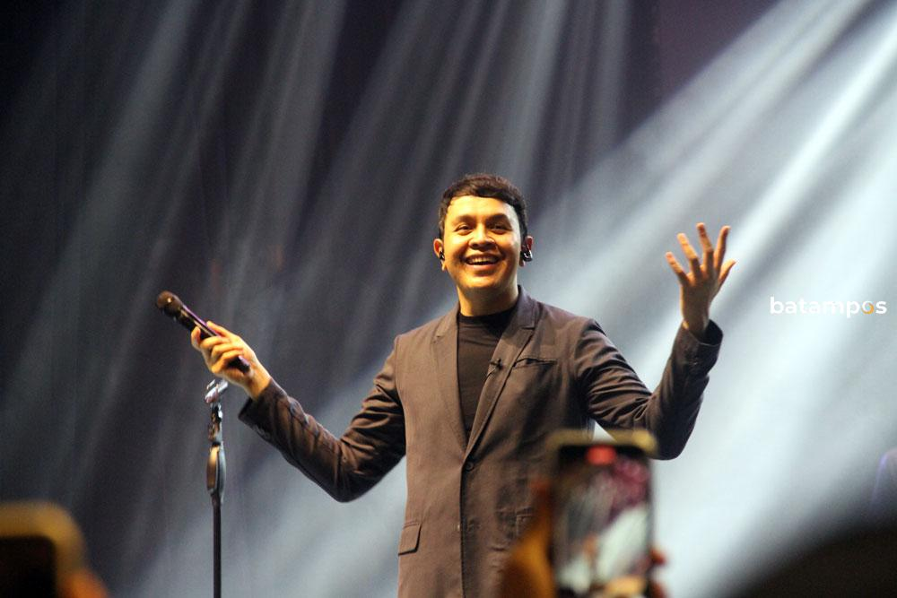
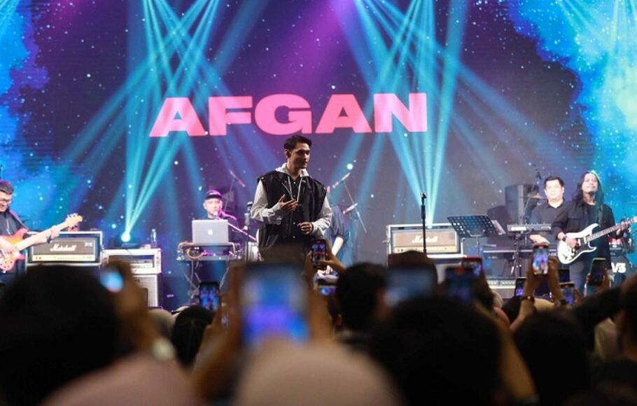
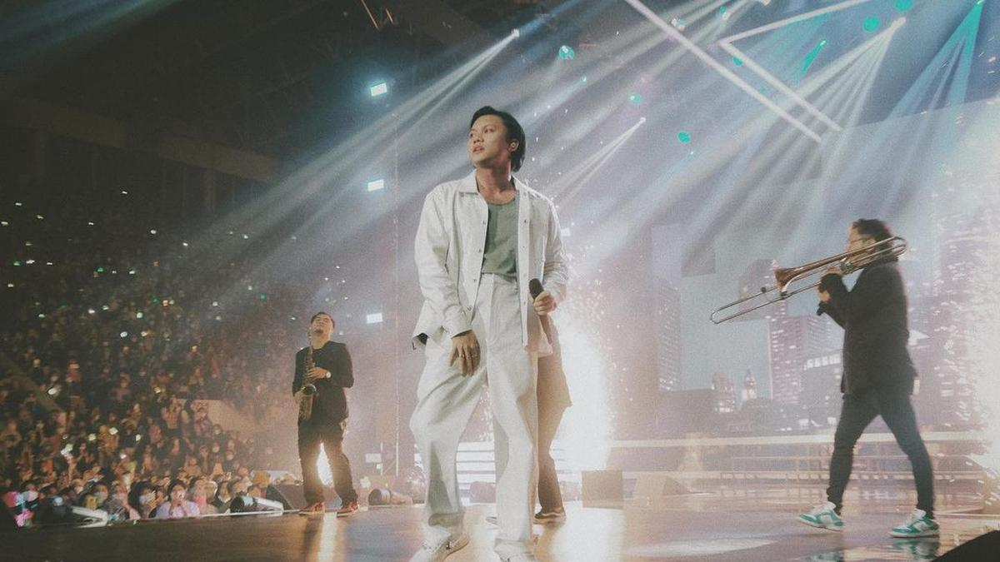

🎵 Para Bintang yang telah Menghiasi Panggung Harmoni Musik!🎵
Nikmati momen spesial melalui galeri eksklusif kami yang menampilkan para Guest Star utama konser Harmoni Musik.

"Malam itu akan selalu terukir indah dalam ingatan. Melihatmu di atas panggung dengan backdrop namamu yang bersinar terang, rasanya seperti mimpi yang jadi kenyataan. Suaramu yang merdu mengalun memenuhi venue, menyentuh setiap sudut hati penonton yang hadir. Setiap lagu yang kamu bawakan bukan sekadar hiburan, tapi juga terapi bagi jiwa yang lelah. Energi positif dan aura profesionalmu di atas panggung benar-benar menginspirasi. Terima kasih sudah menghadirkan musik berkualitas dan tetap rendah hati di tengah kesuksesanmu. Semoga perjalanan kariermu terus cemerlang dan terus menghadirkan karya-karya yang menyentuh hati. Kamu adalah bukti bahwa talenta sejati akan selalu bersinar!"

"Malam itu panggung menjadi milikmu sepenuhnya! Ketika spotlight menyorotmu dengan gaun putih yang anggun, rasanya seperti menyaksikan seorang diva sejati tampil memukau. Suaramu yang powerful dengan kontrol vokal yang luar biasa membuat setiap lagu terdengar begitu emosional dan menyentuh. Range vokal yang kamu miliki benar-benar spektakuler - dari nada rendah yang lembut hingga high notes yang menggetarkan jiwa. Tidak heran kamu dijuluki sebagai salah satu vokalis terbaik generasi ini. Kemampuanmu membawakan berbagai genre musik dengan sempurna menunjukkan kedewasaan musikalitas yang jarang dimiliki artis seusiamu. Terima kasih sudah terus berkarya dengan integritas dan passion yang tinggi. Setiap penampilanmu adalah masterclass dalam bernyanyi. Semoga terus bersinar dan menginspirasi banyak orang lewat musik yang kamu ciptakan!"

"What a night to remember! Performamu di atas panggung benar-benar membuktikan bahwa kamu adalah rising star yang layak diperhitungkan. Energi yang kamu pancarkan begitu powerful dan menular ke seluruh venue. Suaramu yang kuat dan teknik vokal yang memukau membuat setiap lagu terdengar sempurna. Melihat profesionalitas dan dedikasimu di usia muda sangat menginspirasi. Kamu tidak hanya talented, tapi juga punya work ethic yang luar biasa. Stage presence-mu sudah seperti performer berpengalaman. Terima kasih sudah memberikan tontonan yang berkualitas dan menghibur. Semoga perjalanan kariermu terus menanjak, dan suatu saat nanti kita bisa melihatmu di panggung-panggung internasional!"

"Konser malam itu adalah perjalanan emosional yang luar biasa. Ketika lampu panggung menyorot dan namamu terpampang megah, suasana langsung berubah menjadi magis. Suaramu yang khas dan penuh karakter membawakan setiap lagu dengan penghayatan yang mendalam. Tidak ada yang berlebihan, semuanya natural dan menyentuh. Kamu berhasil menciptakan intimasi di tengah ribuan penonton yang hadir. Setiap lirik terasa begitu dekat dan personal, seolah kamu bernyanyi khusus untuk setiap individu di sana. Kemampuanmu menyampaikan cerita lewat musik adalah anugerah yang langka. Terima kasih sudah tetap humble dan autentik. Semoga terus menghadirkan karya-karya yang bermakna dan menginspirasi!"

"Malam itu adalah bukti nyata kenapa kamu disebut sebagai salah satu vokalis terbaik Indonesia. Setiap not yang keluar dari mulutmu terdengar sempurna, penuh emosi, dan sarat makna. Arrangement musik yang apik, ditambah pencahayaan panggung yang artistik, menciptakan atmosfer yang begitu special. Kamu tidak hanya bernyanyi, tapi juga bercerita lewat setiap gesture dan ekspresi. Koneksi yang kamu bangun dengan penonton sangat kuat - setiap orang merasa terlibat dalam performa. Lagu-lagu hitsmu yang dibawakan dengan penghayatan total membuat banyak yang terhanyut dalam kenangan. Terima kasih sudah konsisten menghadirkan musik berkualitas dan tetap menjaga integritas artistikmu. Semoga terus berkarya dan menginspirasi generasi musisi Indonesia!"

"Malam itu benar-benar showcase dari seorang musisi multitalenta! Penampilanmu di atas panggung dengan balutan outfit putih yang elegan mencerminkan profesionalitas dan kematangan artistikmu. Suaramu yang khas dengan warna vokal yang warm dan soulful berhasil menyihir ribuan penonton yang hadir. Setiap lagu yang kamu bawakan terasa begitu personal dan penuh penghayatan, seolah kamu menuangkan seluruh emosimu dalam setiap not. Kemampuanmu dalam bermusik bukan sekadar bakat turunan, tapi hasil dari dedikasi dan kerja keras yang konsisten. Dari menyanyikan lagu ballad yang mellow hingga lagu upbeat yang energik, semuanya kamu handle dengan sempurna. Stage presence-mu juga semakin matang, menunjukkan evolusi sebagai performer sejati. Terima kasih sudah terus berinovasi dalam bermusik dan tidak takut bereksperimen dengan berbagai genre. Perjalanan kariermu dari masa ke masa selalu menginspirasi. Semoga terus menghasilkan karya-karya berkualitas dan membawa nama Indonesia di kancah musik internasional. You're truly one of the best!"